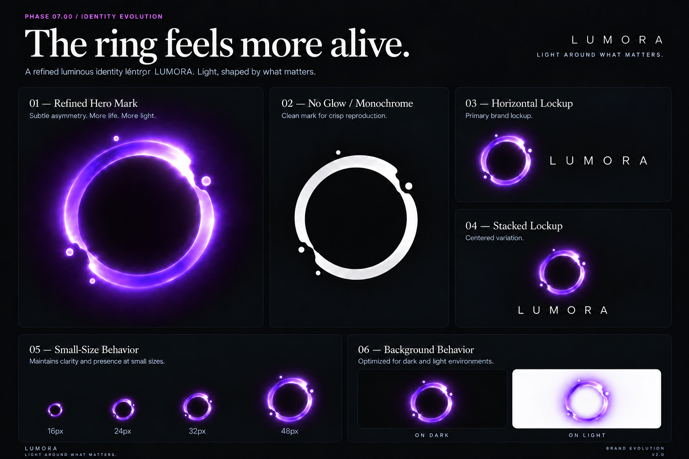

A. APPROVED PNG REFERENCE

The approved PNG remains the visual source of truth. V2 is judged for liquid-light character, organic thickness, highlight concentration, interruption behavior, and droplet distribution—not merely SVG validity.

V1 is preserved; V2 is experimental and not approved for production integration.